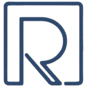
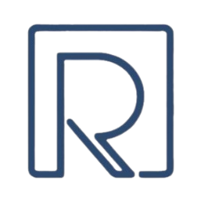

Home / Website logo
Website logo
Owner decision (2026-10-22): the website uses the original ROICIANS logo on its own, with no TECH, dividers or extra lettering.
How the logo is used


Practical technology training for the AI era.
Practical technology training for the AI era.
Favicon: the R symbol alone

ROICIANS
How the original logo is preserved
- Master file unchanged:
docs/brand/roicians-logo-original.png, 433 × 370 transparent PNG, SHA-25613ecd0b8ae36b968…. - Header:
roicians-symbol.pngandroicians-wordmark.pngare straight crops of the original, placed side by side. Both are shown at the same scale as in the original logo, so their relative size is unchanged: the symbol is 56 px tall on desktop and 46 px on phones. The wordmark's letters are centred on the symbol. - Footer:
roicians-logo-web.pngis the original stacked logo with only its empty transparent margin trimmed. It is 140 px wide on desktop and 124 px on phones. - Favicon:
roicians-favicon.pngis the original symbol's pixels on a transparent 180 × 180 square.roicians-touch-icon.pngis the same on white, because phones show a transparent home-screen icon on black.- Browsers scale it down for the tab. The thin lines of the R are light at 16 px, so a vector (SVG) master would sharpen it.
- Colour and proportions: the original navy (about
#2E496C). Nothing is recoloured, redrawn, stretched or squeezed; the images ignore the site-wide image width limit, so they can never be distorted. - Backgrounds: white or soft blue only, never dark.
- Resolution: sharp at these sizes. A vector (SVG) or larger master is still recommended before launch.
Scope of this decision
- The logo decision covers the website logo only.
- Public brand name (owner decision, later on 2026-10-22): the India website's public brand is ROICIANS, used consistently in page titles, labels, navigation and future SEO metadata.
- The legal company name stays Roicians Tech Pvt. Ltd., as shown in the footer. Approved legal information, the LMS, the domain plans and the Canada website are unchanged.
Review history
- Header Option B and footer Option A (provisionally chosen, then withdrawn). TECH sat after a vertical divider in the header and between horizontal rules in the footer; the owner found this dated and inconsistent. Commit
8db3c00. - Revision 2, two TECH lockups (not adopted). TECH sat alongside the wordmark, or beneath its end. Commit
745c8df. - Decision: no TECH in the logo. The original ROICIANS logo is used on its own (this page).
Earlier versions remain in the repository history. For example, git show 745c8df:docs/prototypes/website-v2/logo-options.html shows the revision-2 page. The full record is in docs/brand/WEBSITE_LOGO_DECISIONS.md.